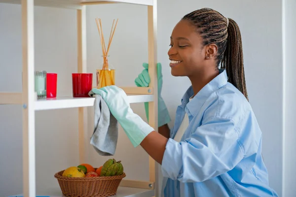

Who we are
We are a new cleaning services startup specializing in high-end housekeeping. Our personalized approach to house cleaning along with our trusted team of dedicated professionals will ensure your house gets and stays clean!
What makes us different
You get a couple of initial home visits from Joy, our head of the company, to prioritize your space, get rid of what’s not important, and finally create an organizational system that the house cleaners will then implement and follow. Joy also makes surprise visits to her clients' homes in order to maintain the aesthetics she has created and to personally train new house cleaners.
Services
You get two committed house cleaners devoted to the deep cleaning and organization of your home. Strategy and management systems are put in place to maintain the healthiest of living environments.
About Joy
After 30 years in housekeeping services and a lot of frustration about the way things work I decided to take matters into my own hands and founded Joyfully Clean, a high-end housekeeping startup that prioritizes a tailored experience. With a trusted team of dedicated professionals by my side our mission is to deliver more than just cleaning—we bring peace of mind, consistency, and a personal touch to every home. At Joyfully Clean, we believe your space should reflect your lifestyle, and our goal is to ensure your house not only gets clean but stays beautifully maintained.

For a commercial cleaning quote
Products
All our products are eco-friendly, leave no residue and are pet-safe.

FAQ
Do I need to provide my own cleaning supplies and equipment?
Here at Joyfully Clean we provide our cleaning professionals with all the necessary supplies and equipment they need which are approved by the United States Environmental Protection Agency, so you don't have to worry about this.
Do I need to be home for my booking?
Depending on the cleaning service you hired you may have to. Some cleaning services require someone to be home to provide access to certain areas of the house. However if you feel comfortable giving a spare key to the cleaning service, they can clean the house while you're not at home.
How do I edit a booking
For the moment you'll have to either contact us by e-mail or give us a call, we're working on an online calendar!
Can I trust my home cleaning professional?
At Joyfully Clean, we know that letting someone into your house is a matter of trust. That's why every one of our cleaning professionals goes through a thorough background check, reference verification and in-person interview process before joining our team. You can rest assured you're in good hands!
Should I give the cleaner a tip?
Tipping is a common way to show appreciation and acknowledge good work. While our professional home cleaners are well reimbursed it is up to you whether to tip or not as a way of saying thank you.